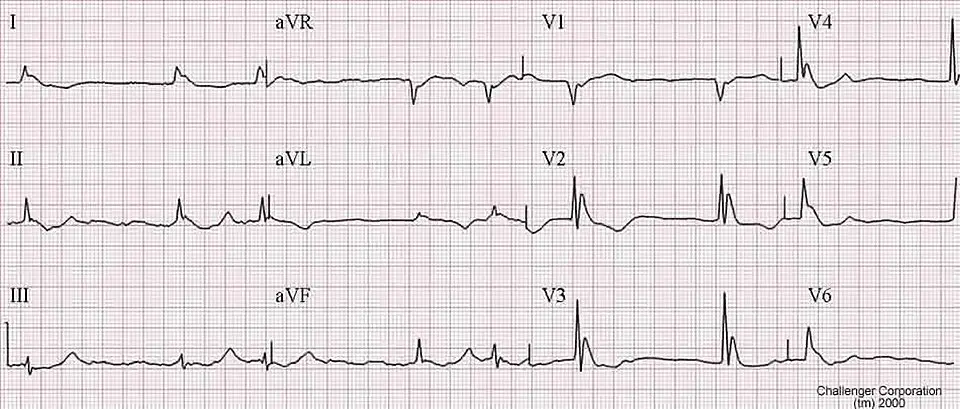

DX.7 — Arrêt cardiaque
1. Définition et sémantique
Maladies de l'appareil circulatoireCIM-11 , chapitre 11
- Cardiopathies ischémiquesle myocarde reçoit un apport de sang insuffisant
- Maladies cérébrovasculairesles vaisseaux qui irriguent le cerveau sont atteints
- Insuffisance cardiaquedébit cardiaque inadapté aux besoins de l'organisme
- Troubles du rythme et de la conductioncette famille contient l'arrêt cardiaque
Troubles du rythme et de la conductionCIM-11
- Fibrillation atrialele rythme atrial s'emballe et se désorganise
- Tachycardie ventriculairece rythme rapide d'origine ventriculaire peut dégénérer en fibrillation
- Bloc auriculo-ventriculairela conduction entre oreillettes et ventricules se ralentit ou s'interrompt
- Arrêt cardiaque
Arrêt cardiaqueCIM-11
- Arrêt cardiaque normotherme, à l'origine d'un refroidissement secondaire
- Arrêt cardiaque hypothermiqueil correspond au stade HT IV
L'arrêt cardiaqueIl correspond à la cessation de l'activité mécanique efficace du cœur : le patient ne respire plus et n'a ni pouls carotidien ou fémoral ni pression artérielle mesurable. On cherche les signes de vie pendant 60 secondes au plus. est la cause la plus grave d'un patient trouvé froid1. Il se distingue de l'hypothermie accidentelleElle désigne une baisse involontaire de la température centrale sous 35 °C1. Elle est primaire (exposition au froid chez un sujet sain) ou secondaire (maladie, intoxication, traumatisme)., où l'arrêt est la conséquence du froid1.
DX.7 désigne l'arrêt qui précède et provoque le refroidissement1. Un arrêt normotherme est suivi d'un refroidissement lent en lieu froid. L'arrêt cardiaque hypothermiqueIl survient à basse température centrale, classiquement sous 24 °C (stade HT IV)1. Il diffère d'un arrêt normotherme : la conduite et le pronostic changent. Il peut survenir à une température plus haute ou plus basse. est l'inverse : le froid cause l'arrêt.
2. Épidémiologie (Suisse, puis Europe)
En Suisse, l'arrêt cardiaque figure dans 27 des 439 cas d'hypothermie accidentelle (≤ 35 °C), soit 6,2 % (Berne 2000–2019 ; Habegger 2022)2. En Europe, l'incidence varie de 0,13 à 6,9 cas pour 100 000 par an, et la mortalité atteint 2 (Écosse) à 5 (Pologne) décès pour 100 000 (Paal 2022)1. Le registre international rapporte 36 % de survie après arrêt hypothermique, et les centres traitent rarement plus de 20 patients par an1,2.
| Mesure (unité) | Chiffre lu | Dénominateur et précision clinique |
|---|---|---|
| Incidence relative (cas pour 1000 consultations d'urgence)21 | 0,32 pour 1000 consultations d'urgence21 | Moyenne d'environ 22 cas par an21 |
| Arrêt cardiaque comme cause (n/N, %) | 27/439 (6,2 %) | Causes multiples possibles : ce pourcentage n'est pas un rang de fréquence |
| Hypothermie sévère, température sous 28 °C (% des cas)21 | 11,9 % des cas21 | Mortalité hospitalière 38,5 %21 |
| Mortalité globale (% des patients) | 22,3 % | Dépend de l'âge, du sexe, de la cause et de la gravité |
| Âge médian (années) | 55 ans (IQR 39–70)21 | Plus âgés si cause médicale (65 ans)21 |
| Incidence européenne de l'hypothermie accidentelle (cas pour 100 000 habitants par an)21 | 0,13 à 6,9 | Les données nationales fiables manquent dans la plupart des pays |
| Mortalité européenne (décès pour 100 000 habitants par an)21 | Environ 2 en Écosse, 5 en Pologne21 | Données nationales de deux pays |
| Survie après arrêt hypothermique, registre international (% des patients du registre) | 36 % | Patients plus jeunes que ceux de Berne, avec un biais de sélection possible |
| Activité des grands centres (patients par an) | Rarement plus de 2021 | Un arrêt hypothermique se traite en centre avec assistance extracorporelle ; cette orientation conditionne la survie |
3. Physiopathologie
La chaîne descend du moléculaire au clinique en quatre temps : amorce, développement, installation, maintien. Niveau moléculaire : le froid ralentit les enzymes. Niveau cellulaire : le métabolisme et les canaux ioniques ralentissent. Niveau tissulaire : le myocarde devient irritable. Niveau clinique : la bradycardie précède l'arrêt. Le tableau relie chaque lésion à son examen et à son traitement1.
Amorce. L'homéothermieElle désigne le maintien de la température centrale autour de 37 ± 0,5 °C1. L'hypothalamus, la vasoconstriction cutanée, le frisson et le comportement l'assurent. cède quand la perte de chaleur dépasse la production1. Le frisson augmente la production jusqu'à 500 % du métabolisme de base1. Il s'épuise ou disparaît chez le sujet blessé, sédaté ou épuisé.
Développement. Le métabolisme cellulaire ralentit. La fréquence cardiaque et la pression artérielle baissent de façon proportionnelle à la température. La bradycardie et l'hypotension en hypothermie modérée ou sévère sont des réponses physiologiques. Elles ne demandent aucun traitement autre que le réchauffement.
Installation. Le myocarde devient irritable. L'arrêt survient sous 30 °C chez l'adulte sain et sous 32 °C chez le sujet âgé ou polymorbide1. Le rythme d'arrêt est la fibrillation ventriculaireElle désigne une activité électrique ventriculaire désorganisée, sans éjection de sang. Le seul traitement est le choc électrique. Sous 30 °C, il répond mal à ce choc. ou l'asystolie1. Le déclencheur est souvent mécanique : mouvement brusque ou pose d'un cathéter central. Ce mécanisme porte le nom de rescue collapseIl désigne l'effondrement circulatoire survenant pendant le sauvetage ou le transport d'un patient hypotherme. Il peut se présenter comme un arrêt cardiaque assisté. Il double le risque de décès chez l'hypotherme sévère.1.
Maintien. Le afterdropIl désigne la poursuite de la baisse de la température centrale après le début du réchauffement. La cause principale est la reperfusion des extrémités froides. peut déclencher un arrêt. L'hypovolémie s'ajoute, car la diurèse du froid, la fuite plasmatique et la perte d'apport diminuent le volume circulant. Lors du réchauffement, la vasoconstriction se lève et le volume manque. Le choc survient si le volume n'est pas remplacé.
Le froid protège le cerveau de l'hypoxie. Pour cette raison, les chances de survie et de bon résultat neurologique sont plus élevées que dans l'arrêt normotherme, que l'arrêt soit témoigné, non témoigné ou en asystolie. De bons résultats sont possibles malgré un long temps sans flux, mais seulement si l'hypothermie a précédé l'arrêt.
| Lésion ou perturbation | Exploration qui la montre | Thérapeutique qui la corrige (mécanisme) |
|---|---|---|
| Irritabilité myocardique, FV ou asystolie | ECG par électrodes autocollantes, température centrale | Massage continu et trois chocs au plus sous 30 °C ; assistance extracorporelle qui remplace la pompe cardiaque1 |
| Bas débit, absence de pouls | Pouls 60 secondes, ETCO2, échographie au lit1 | RCP pour maintenir un débit minimal ; ECMO pour rétablir le débit complet |
| Hypothermie profonde | Thermomètre épitympanique ou œsophagien | Réchauffement interne de 4 à 10 °C/h par ECMO1 |
| Hypovolémie, diurèse du froid | Pression artérielle, diurèse, lactate | Remplissage prudent par solutés tièdes à 38–42 °C1 |
| Coagulopathie du froid | Tests de coagulation | Héparine réduite au strict besoin de l'ECMO ; réchauffement |
| Œdème pulmonaire après réchauffement (SDRA) | Radiographie, gaz du sang | L'ECMO soutient les poumons après le retour de la circulation |
4. Démarche diagnostique
Le raisonnement part du titre : un patient froid, sans signe de vie. Il faut d'abord exclure ce qui ne peut pas attendre. Chaque drapeau rouge ci-dessous change la destination du patient. Un seul suffit pour orienter vers un centre doté d'une assistance extracorporelle1.
🚩 Absence de signe de vie à 60 secondesDrapeau rouge : sans respiration, pouls carotidien ou fémoral ni pression, le patient est en arrêt1. Il faut commencer la réanimation, car le pouls peut être très lent et difficile à sentir. Le signe qui tranche est l'absence de mouvement thoracique et de pouls, avec un ETCO2 indétectable. Le piège est un pouls minimal, qui passe inaperçu chez l'hypotherme ; il faut le confirmer à l'ECG, à l'échographie ou par ETCO2.
🚩 Température centrale sous 30 °CDrapeau rouge : le risque d'arrêt devient élevé1. Le seuil est 32 °C chez le sujet âgé ou polymorbide1. Un patient qui frissonne a plus de 30 °C.. Piège : le frisson n'est pas fiable pour le stade ; la conscience guide quand le thermomètre manque1.
🚩 PAS sous 90 mmHgDrapeau rouge : une hypotension chez l'hypotherme annonce l'effondrement1. La pression est parfois difficile à mesurer à cause de la vasoconstriction.
🚩 Dysrythmie ventriculaireDrapeau rouge : des extrasystoles ventriculaires répétées, une TV ou une FV signent un myocarde irritable, proche de l'arrêt.
Ces deux signes imposent le transfert direct vers un centre avec assistance extracorporelle1.
🚩 Manipulation brusqueDrapeau rouge : mouvement brutal, exercice ou geste invasif peuvent déclencher un rescue collapse. Il faut transporter le patient doucement, à l'horizontale.. Conduite immédiate : immobiliser, isoler du froid, brancher des électrodes autocollantes.
On suit ces étapes en l'absence de drapeau rouge, du plus simple au plus précis :
- On mesure la température centrale avec la méthode disponible.
- On classe le stade par la conscience (échelle AVPU) si le thermomètre manque.
- On recherche la cause : arrêt cardiaque primaire, intoxication, traumatisme, hypoglycémie.
- On réchauffe à l'extérieur et on surveille le rythme.
- On oriente vers l'assistance extracorporelle si le risque d'arrêt monte.
Le tableau classe chaque diagnostic dangereux avec son signe qui tranche, son piège et sa conduite1.
| Diagnostic | Élément qui tranche | Piège | Conduite si le résultat est positif |
|---|---|---|---|
| Arrêt hypothermique | Pouls absent à 60 secondes, apnée, ETCO2 indétectable1 | Un pouls minimal passe inaperçu chez l'hypotherme | RCP continue, électrodes autocollantes, transfert vers un centre d'ECMO1 |
| Arrêt normotherme avec refroidissement secondaire | Malaise ou douleur thoracique rapportés avant l'arrêt1 | La température centrale est moins basse que prévu | Algorithme standard de réanimation, puis recherche de la cause cardiaque1 |
| Rescue collapse ou afterdrop | Perte du pouls après un mouvement ou lors du réchauffement1 | L'arrêt est parfois témoigné et récupérable | Manipulation douce, surveillance continue de l'ECG et du pouls |
| Hypoglycémie ou intoxication associée | Glycémie capillaire basse ; alcool, drogues ou sédatifs à l'anamnèse | Ces causes altèrent la conscience et masquent le stade | Glucose i.v. ou IO ; recherche de la cause |
5. Anamnèse ciblée et drapeaux rouges
L'histoire vient souvent d'un témoin ou des secours. Chaque question change la décision, comme le montre le tableau.
| Question | Raison | Décision modifiée |
|---|---|---|
| L'arrêt a-t-il été vu ? Quelle heure ? | Un arrêt témoigné a un temps sans fluxDurée entre l'arrêt et le début de la RCP. Plus elle est courte, meilleur est le pronostic neurologique. court | Pronostic et choix de l'ECPR |
| Le patient a-t-il eu une syncope, une douleur thoracique, des palpitations avant ? | Un arrêt primaireArrêt d'origine cardiaque (ischémie, arythmie) survenu avant le refroidissement, par opposition à l'arrêt causé par le froid. précède le refroidissement | Cause cardiaque à traiter (coronarographie après le retour de circulation) |
| Était-il dans l'eau ou sous une avalanche ? | AsphyxieManque d'oxygène par obstruction des voies aériennes ou immersion. Elle cause un arrêt hypoxique sans protection cérébrale du froid. et hypothermie se combinent | Mauvais pronostic si ensevelissement > 60 min avec voies aériennes obstruées1 |
| Alcool, drogues, sédatifs ? | Ils suppriment le frissonContraction musculaire involontaire qui multiplie la production de chaleur jusqu'à 500 % du métabolisme de base. et accélèrent le refroidissement1 | Température plus basse que prévue |
| Comorbidités, âge, traitements anticoagulants ? | Myocarde irritableTendance du muscle cardiaque froid à fibriller sous un stimulus mécanique ou électrique. dès 32 °C ; risque hémorragique sous assistance1 | Indication de l'ECMO |
| Traumatisme associé ? | Le trauma refroidit vite et saigne | Le trauma n'est pas une contre-indication au réchauffement |
| Directive anticipée ou ordre de non-réanimation ? | Volonté du patient | Ne pas débuter ou arrêter la RCP |
Drapeaux rouges actionnables : sans signe de vie, appelez l'urgence et orientez vers un centre doté d'ECMO (avis spécialisé immédiat). Après le retour de circulation, demandez l'imagerie cardiaque ou cérébrale selon la cause. Les drapeaux d'arrêt de la RCP sont : lividités fixes, danger ou épuisement des secours, ordre de non-réanimation valide ou ensevelissement supérieur à 60 minutes avec asystolie et voies aériennes obstruées1. Ils autorisent à ne pas réanimer ou à arrêter. La rigidité apparente n'est pas un signe fiable de mort chez l'hypotherme1.
6. Examen physique ciblé, région par région
L'examen suit cinq régions. Pour chacune, le normal précède le pathologique.
| Région | Normal attendu | Signes pathologiques |
|---|---|---|
| Aspect général et peau | Tronc tiède, peau rosée | Tronc froid au toucherTechnique : on pose le dos de la main sur le thorax ou l'abdomen sous les vêtements. Valeur : la valeur prédictive négative est élevée pour l'hypothermie, mais l'estimation reste grossière. Piège : le geste n'est pas validé en milieu froid et ne remplace pas le thermomètre. · Lividités fixesTechnique : on appuie sur les zones déclives violacées ; elles ne blanchissent pas si elles sont fixes. Valeur : ce signe de mort irréversible autorise l'arrêt de la RCP. Piège : des lividités non fixes n'excluent pas un patient réanimable. |
| Voies aériennes et respiration | Fréquence 12 à 20/min, SpO2 > 94 %1 | ApnéeTechnique : on regarde, on écoute et on sent la respiration pendant 60 secondes. Valeur : l'apnée définit l'arrêt avec l'absence de pouls. Piège : la respiration reste très lente et superficielle chez l'hypotherme. · ETCO2Technique : on pratique la capnographie sur masque ou sur tube. Valeur : un CO2 expiré détectable indique une circulation. Piège : l'ETCO2 n'est pas fiable en hypothermie sévère, donc on ne règle pas la ventilation sur lui1. |
| Circulation | Pouls 60 à 100/min, PAS ≥ 90 mmHg1 | Pouls absent à 60 secondesTechnique : on palpe les artères carotide et fémorale pendant 60 secondes. Valeur : ce signe définit l'arrêt avec l'apnée. Piège : une bradycardie extrême passe pour un arrêt ; on la contrôle à l'ECG ou à l'échographie. · Échographie au litTechnique : on place la sonde en sous-xiphoïdien et on cherche une activité cardiaque organisée. Valeur : l'examen détecte un débit résiduel. Piège : la lecture reste difficile en pleine RCP1. |
| Tête et yeux | Pupilles réactives, symétriques | Pupilles fixes dilatéesTechnique : on éclaire chaque pupille avec une lampe. Valeur : des pupilles fixes dilatées ne contre-indiquent pas le réchauffement chez l'hypotherme en arrêt. Piège : on ne doit pas conclure à la mort cérébrale. |
| Neurologie et température | Conscient (AVPU : A), 37 ± 0,5 °C1 | Altération de la conscienceTechnique : on note A, V, P ou U, ou le GCS. Valeur : cet examen guide le mieux le stade sans thermomètre. Piège : l'alcool ou un traumatisme altèrent aussi la conscience. · Température centraleTechnique : on utilise une sonde épitympanique si le patient n'est pas intubé, œsophagienne s'il est intubé, vésicale à l'hôpital. Valeur : la mesure est le seul moyen de poser le diagnostic. Piège : un thermomètre tympanique infrarouge ou axillaire donne une valeur inexacte en hypothermie. |
7. Approche syndromique
7.1 Hypothermie à risque d'arrêt (stades HT II et HT III). Les signes fonctionnels sont la somnolence, la confusion, la parole lente et l'arrêt du frisson1. Les signes physiques sont la bradycardie, l'hypotension et la conscience altérée.
- Arrêt du frissonRecherche : on observe les masséters et les pectoraux, la main posée sur le thorax. Mécanisme : les substrats énergétiques s'épuisent sous 30 °C1. Piège : sédatifs et opiacés suppriment aussi le frisson. : il signale un risque accru d'arrêt1.
- Bradycardie sinusaleRecherche : on compte le pouls radial 60 secondes1 et on enregistre un ECG. Mécanisme : le froid ralentit le nœud sinusal. Piège : ne pas la traiter par atropine ; le réchauffement la corrige. : elle répond au métabolisme réduit1.
7.2 Arrêt cardiaque hypothermique (HT IV). Il n'y a aucun signe fonctionnel, car le patient est inconscient1. Les signes physiques sont l'apnée et l'absence de pouls et de pression.
- Rythme de FV ou asystolie à l'ECGRecherche : on pose des électrodes autocollantes plutôt que des câbles, pour réduire l'artéfact du frisson. Mécanisme : le myocarde devient irritable, puis inexcitable. Piège : la FV réfractaire sous 30 °C ne justifie pas d'insister avec les chocs1.
- Rigidité apparenteRecherche : on mobilise la mâchoire et les membres. Mécanisme : le froid raidit les muscles. Piège : ce n'est pas la rigidité cadavérique ; ne pas conclure au décès.
7.3 Arrêt normotherme avec refroidissement secondaire. Un témoin rapporte les signes fonctionnels : douleur thoracique, malaise ou syncope avant l'arrêt1. Les signes physiques sont un rythme choquable possible et une température centrale parfois peu abaissée.
- Rythme choquableRecherche : on analyse le rythme au défibrillateur. Mécanisme : une cause cardiaque, par exemple une ischémie, déclenche l'arrêt. Piège : sous 30 °C, les chocs répétés restent inefficaces1.
7.4 Rescue collapse et afterdrop. Le signe fonctionnel est un malaise pendant le sauvetage1. Le signe physique est la perte du pouls après un mouvement ou lors du réchauffement.
- Perte de pouls pendant le transportRecherche : on surveille en continu l'ECG et le pouls. Mécanisme : un stimulus mécanique ou le retour de sang froid vers le cœur déclenche l'arrêt. Piège : l'arrêt est parfois témoigné et récupérable.
| Syndrome | Signes fonctionnels | Signes physiques |
|---|---|---|
| 7.1 Hypothermie à risque d'arrêt (stades HT II et HT III) | Somnolence, confusion, parole lente, arrêt du frisson1 | Bradycardie, hypotension, conscience altérée |
| 7.2 Arrêt cardiaque hypothermique (HT IV) | Aucun, car le patient est inconscient1 | Apnée, absence de pouls et de pression |
| 7.3 Arrêt normotherme avec refroidissement secondaire | Douleur thoracique, malaise ou syncope avant l'arrêt1 | Rythme choquable possible, température centrale parfois peu abaissée |
| 7.4 Rescue collapse et afterdrop | Malaise pendant le sauvetage1 | Perte du pouls après un mouvement ou lors du réchauffement |
8. Diagnostic positif et critères
| Question | Critère (°C) |
|---|---|
| Hypothermie accidentelle | Température centrale < 35 °C1 |
| Stades cliniques | HT I : conscient, frisson, 35–32 °C. HT II : conscience altérée, < 32–28 °C. HT III : inconscient, signes vitaux présents, < 28 °C. HT IV : pas de signe vital, classiquement < 24 °C1 |
| Diagnostic d'arrêt | Absence de respiration, de pouls carotidien ou fémoral et de pression, après 60 secondes de recherche1 |
| Transfert direct vers un centre avec assistance extracorporelle | Arrêt, ou température centrale < 30 °C, ou PAS < 90 mmHg, ou dysrythmie ventriculaire1 |
| ECPR à ne pas utiliser | Température centrale > 30 °C, traumatisme majeur, comorbidité incompatible avec une qualité de vie acceptable1 |
Plusieurs éléments ne suffisent pas à poser la mort : l'asystolie, l'arrêt non témoigné, une température très basse et un long temps sans flux1. Des pupilles fixes dilatées, un ETCO2 sous 10 mmHg, l'âge élevé ou un traumatisme ne la prouvent pas non plus1. Aucun de ces éléments ne contre-indique le réchauffement1.
Le score HOPE estime la survie après réchauffement extracorporel. Il se calcule sur hypothermiascore.org à partir de l'âge, du sexe, de la température, du mécanisme de refroidissement et de la durée de la RCP. L'indice de concordance externe du score atteint 0,8251,2,3.
9. Examens complémentaires
9.a Gold standard. Il n'existe pas de gold standard biologique de l'arrêt : le diagnostic est clinique (60 secondes sans signe vital)1. Pour la température, la référence est le cathéter de l'artère pulmonaire, inutilisable en urgence.
9.b Première intention.
| Examen et prescription | Résultat | Signification | Conduite |
|---|---|---|---|
| Température centrale : sonde épitympanique, œsophagienne ou vésicale | 35 °C et plus1 | Pas d'hypothermie | Chercher une autre cause d'arrêt |
| 32 à 30 °C1 | Risque d'arrêt chez le sujet fragile | Surveillance de l'ECG, transport doux | |
| < 30 °C | Risque élevé ou arrêt | Centre avec assistance extracorporelle | |
| ECG par électrodes autocollantes | FV, asystolie ou rythme organisé | Rythme d'arrêt ou débit résiduel | Trois chocs au plus sous 30 °C ; massage continu1 |
| Glycémie capillaire | Hypoglycémie | Cause ou aggravant | Glucose i.v. ou IO ; en cas d'altération sans mesure possible, glucose empirique |
| Gaz du sang interprétés à 37 °C (alpha-stat)1 | pH, PaCO2 | Meilleure perfusion cérébrale qu'avec correction de température | Ne pas corriger les valeurs à la température du patient |
9.c Alternatives. L'échographie au lit détecte une activité cardiaque organisée. L'ETCO2 détectable indique une circulation, mais il n'est pas fiable en hypothermie sévère. Le toucher du tronc fournit une estimation grossière1. En grossesse, l'échographie est préférée1. Pour l'imagerie avec produit iodé après le retour de circulation, on vérifie la fonction rénale (DFGe < 30 mL/min)1. La sonde œsophagienne reste contre-indiquée si les voies aériennes ne sont pas sécurisées1.
ECG douze dérivations d'un patient hypotherme : onde J d'Osborn. ECG standard à douze dérivations, rythme lent ; inscription visible : Challenger Corporation

Lisez d'abord seul ce cliché (ecg douze dérivations d'un patient hypotherme : onde j d'osborn) : cherchez vous-même le signe.
La copie annotée (ecg douze dérivations d'un patient hypotherme : onde j d'osborn) numérote les repères décrits ci-dessous.
- 1. En V3, une encoche positive suit le complexe QRS : c'est l'onde J d'Osborn, absente d'un tracé normal où le segment ST reste isoélectrique1.
- 2. En V4, le point J se soulève après le QRS, car le froid retarde la repolarisation précoce1.
- 3. En V5, la même déflexion montre que le signe touche les dérivations précordiales gauches1.
- Une onde J ne se confond pas avec un élargissement du QRS ni avec une élévation ST d'infarctus ; seule la température centrale confirme l'hypothermie.
- Un tracé de ce type ne dit pas s'il existe un pouls : il se lit avec la clinique, car la bradycardie extrême du froid peut être prise pour un arrêt.
Ce que l'image décide. L'onde J, avec un rythme lent, conforte l'hypothermie. On mesure la température centrale et on confirme l'arrêt par 60 secondes sans signe de vie1. On transfère vers un centre d'ECMO si la température est inférieure à 30 °C (points 10 et 11)1.
9.d Deuxième intention. Lactate, pH, tests de coagulation et kaliémie renseignent le pronostic. Une kaliémie élevée est associée à une survie moindre.
Cas de figure. Concordant : l'absence de pouls, un ECG plat, un ETCO2 nul et un tronc froid confirment un arrêt. Discordant : en l'absence de pouls palpable mais avec une activité à l'échographie, on ne masse pas comme pour un arrêt sans vérifier. Limite : à une température de 30 à 32 °C avec un rythme instable, on surveille1.
10. Arbre décisionnel
- Si la respiration et le pouls carotidien et fémoral manquent pendant 60 secondes, on démarre la RCP, on pose les électrodes et on mesure la température1. Sinon, on passe au nœud 41.
- Si la température centrale est inférieure à 30 °C, ou inconnue avec des circonstances évidentes de froid, on retient un arrêt hypothermique (nœud 3)1. Si elle atteint 30 °C ou plus, on retient un arrêt normotherme et on applique l'algorithme standard1.
- Si l'arrêt est hypothermique, on masse en continu et on donne trois chocs au plus1. On retient l'adrénaline et l'amiodarone sous 30 °C et on transfère vers l'ECMO1. Si le massage continu est impossible, on alterne 5 minutes de RCP et 5 minutes de pause au plus1.
- Si les signes vitaux sont présents avec une température < 30 °C, une PAS < 90 mmHg ou une dysrythmie ventriculaire à l'ECG, on transfère vers l'ECMO1. Sinon, on réchauffe par voie externe et on surveille.
- En présence de lividités fixes, d'un ensevelissement > 60 min avec asystolie et voies aériennes obstruées ou d'un ordre de non-réanimation valide, on ne débute pas la RCP ou on l'arrête1.
11. Prise en charge selon les recommandations suisses
11.A But thérapeutique. On vise un retour de circulation spontanée. On réchauffe à 5 °C/h au plus (un rythme proche de 2 °C/h améliore la survie neurologique)1. On vise 37 °C chez le patient avec circulation, puis un contrôle de la température selon le protocole local1. On évite l'hyperthermie après la réanimation1.
11.B Moyens, dans l'ordre
Urgence, chronologie.
- On vérifie les signes de vie pendant 60 secondes1. On commence la RCP s'ils sont absents, avec compressions et ventilation comme chez le normotherme.
- On pose des électrodes autocollantes et on analyse le rythme.
- On applique trois chocs au plus si la FV persiste avec une température < 30 °C, et on reporte les suivants jusqu'à plus de 30 °C1.
- Pour l'adrénalineCette DCI correspond à la spécialité Adrénaline «Bichsel»® 0,1 mg/ml (n° 56472)4. Elle appartient à la classe des sympathomimétiques (ATC C01CA24) et agit comme agoniste alpha et bêta. Elle relève du groupe des stimulants cardiaques hors glycosides (ATC C01C)4. Ce groupe comprend l'adrénaline, la noradrénaline (choc vasoplégique), la dopamine et la dobutamine. L'AIPS indique l'adrénaline dans l'arrêt cardiaque et l'anaphylaxie4. En RCP, l'AIPS fixe la posologie de l'adulte à 1 mg i.v., à répéter toutes les 3 à 5 minutes selon la durée de la réanimation4. L'enfant reçoit 0,01 mg/kg i.v., à répéter toutes les 3 à 5 minutes4. Hypothermie : la recommandation ERC 2021, reprise par Paal 2022, retient l'adrénaline sous 30 °C et espace les doses de 6 à 10 minutes entre 30 et 35 °C1. L'AIPS ne prévoit pas cette adaptation à la température4. Contre-indications : l'AIPS retient l'hypertension, la thyréotoxicose, le phéochromocytome et la coronaropathie sévère, mais la réanimation peut justifier l'emploi4. Grossesse : l'adrénaline traverse le placenta et peut causer une anoxie fœtale ; elle ne se donne que sur indication absolue4. Allaitement : elle passe dans le lait, et l'allaitement est impossible en cas d'administration parentérale4. Sous 30 °C, on la retient, c'est-à-dire qu'on ne la donne pas1. Entre 30 et 35 °C, on double l'intervalle entre les doses (6 à 10 minutes ; recommandation ERC 2021 reprise par Paal 2022)1. Au-delà de 35 °C, on applique l'algorithme normotherme1.
- Pour l'amiodaroneCette DCI correspond à la spécialité Amiodarone Labatec® i.v. (n° 59528)5. Elle appartient à la classe des antiarythmiques de classe III (ATC C01BD01). Elle relève du groupe des antiarythmiques de classes I et III (ATC C01B)5. Ce groupe comprend l'amiodarone, le flécaïnide et la propafénone (classe I). L'AIPS réserve l'amiodarone injectable aux arythmies auriculaires, ventriculaires gravement symptomatiques et jonctionnelles, après l'échec d'autres traitements5. En RCP pour une FV réfractaire, l'AIPS fixe la dose initiale à 300 mg (5 mg/kg) dilués dans 20 ml de glucose 5 %, injectés rapidement5. L'AIPS permet une dose additionnelle de 150 mg (2,5 mg/kg) si la FV persiste5. Hypothermie : la recommandation ERC 2021, reprise par Paal 2022, retient l'amiodarone sous 30 °C1. L'AIPS ne prévoit pas cette adaptation à la température5. Contre-indications : l'AIPS retient la bradycardie sinusale, le bloc, l'hypokaliémie et l'allongement du QT, mais ces contre-indications ne s'appliquent pas en RCP pour une FV réfractaire5. Grossesse : elle est contre-indiquée sauf indication vitale maternelle5. Allaitement : il est contre-indiqué5. Interactions : l'AIPS signale les anticoagulants oraux, la digoxine et les médicaments allongeant le QT5. Sous 30 °C, on ne la donne pas : on la retient1. Entre 30 et 35 °C, on la donne aux doses habituelles1.
- L'AIPS cite l'étude ARREST : une dose unique de 300 mg d'amiodarone diluée dans 20 ml de glucose 5 % (246 patients) a donné une survie à l'admission de 44 %5. Sous placebo (258 patients), la survie à l'admission atteint 34 % (p = 0,03)5.
- On assure un accès intraveineux ou IO et on perfuse des solutés réchauffés à 38–42 °C, par bolus guidés par l'état hémodynamique1.
- On transfère le patient sous RCP continue (mécanique si possible) vers un centre d'ECMO. Si la RCP continue est impossible, on alterne au moins 5 minutes de RCP et 5 minutes de pause au plus, ou 10 minutes si la température est sous 20 °C1.
- Au centre, on branche une ECMO veino-artérielle (ECPR) et on réchauffe de 4 à 10 °C/h, avec un objectif ≤ 5 °C/h1. On anticoagule par l'héparineCette DCI correspond à la spécialité Héparine «Bichsel»® 1000 UI/ml (n° 46240)6. Elle appartient à la classe des anticoagulants de type héparine non fractionnée (ATC B01AB01). Elle relève du groupe des antithrombotiques (ATC B01A)6. Ce groupe comprend l'héparine non fractionnée, l'énoxaparine, les anticoagulants oraux directs (rivaroxaban, apixaban) et les antagonistes de la vitamine K. L'AIPS indique l'héparine dans la thromboembolie et la circulation extracorporelle6. Pour la circulation extracorporelle, l'AIPS fixe la dose à 150–300 UI/kg, adaptée aux tests de coagulation6. Contre-indications : l'AIPS retient la thrombopénie induite par l'héparine, la diathèse hémorragique, l'hémorragie cérébrale et la ponction lombaire6. Grossesse : elle ne s'administre que par nécessité absolue6. Allaitement : l'AIPS précise que l'héparine ne passe pas dans le lait6, adaptée aux tests de coagulation et au risque hémorragique1.
- Si l'ECMO est indisponible ou à plus de 6 heures, réchauffer par la technique locale disponible (air pulsé, lavage), car les données comparatives restent limitées1.
| Molécule ® | Dose AIPS | Voie | Durée | Contre-indication majeure | Extrait AIPS |
|---|---|---|---|---|---|
| Adrénaline «Bichsel»® 0,1 mg/ml (n° 56472)4 | Adulte : 1 mg ; enfant : 0,01 mg/kg4 | i.v. | À répéter toutes les 3 à 5 minutes selon la durée de la réanimation | Hypertension, thyréotoxicose, phéochromocytome, coronaropathie sévère ; la réanimation peut justifier l'emploi | « initialement 1 mg i.v. […] répéter cette dose toutes les 3 à 5 minutes selon la durée de la réanimation »4 |
| Amiodarone Labatec® i.v. (n° 59528) | 300 mg (5 mg/kg) dilués dans 20 ml de glucose 5 %, puis 150 mg (2,5 mg/kg)5 | i.v. rapide | Dose initiale, puis dose additionnelle si la FV persiste | Bradycardie sinusale, bloc, hypokaliémie, allongement du QT ; non applicables en RCP pour une FV réfractaire | « la dose initiale par voie intraveineuse comporte 300 mg (ou 5 mg/kg de poids corporel) dilués dans 20 ml de glucose à 5%, injectés rapidement »5 |
| Héparine «Bichsel»® (n° 46240) | 150–300 UI/kg6 | i.v. | Adaptée aux résultats des tests de coagulation | Thrombopénie induite par l'héparine, diathèse hémorragique, hémorragie cérébrale | « héparinisation du sang du malade à raison de 150–300 U.I. d'héparine par kg de poids corporel en fonction des résultats précis des tests de coagulation »6 |
Hors urgence (patient avec circulation, risque d'arrêt).
- Mesures générales : on isole du froid, on retire les vêtements mouillés, on ajoute une couche étanche avec barrière de vapeur et on protège la tête et les mains.
- Traitement pharmacologique : glucose en cas d'hypoglycémie ; pas de traitement spécifique de la bradycardie ni de l'hypotension.
- Non pharmacologique : réchauffement externe actif (air pulsé, coussins chauffants), mobilisation douce à l'horizontale, ventilation selon le poids sans guide ETCO2.
- On diffère l'intubation jusqu'au milieu chaud et on la réalise en séquence rapide.
Situations spéciales. Grossesse et allaitement : les textes AIPS ci-dessus s'appliquent tels quels. Âge extrême : les enfants et les petits adultes se refroidissent plus vite. Enfant : l'AIPS fixe l'adrénaline à 0,01 mg/kg i.v. en RCP4, alors que l'amiodarone injectable n'a pas été étudiée chez l'enfant et l'adolescent5. Insuffisance rénale ou hépatique : on adapte l'amiodarone et l'héparine selon l'AIPS56. Un traumatisme majeur contre-indique l'ECPR si la température dépasse 30 °C1.
Social et professionnel. Organiser l'arrêt de travail, puis vérifier la couverture d'assurance (LAMal, LAA en cas d'accident, LAI) et réévaluer l'aptitude à conduire après l'arrêt.
11.C Surveillance. On surveille en continu la température centrale (sonde œsophagienne ou vésicale) et l'ECG1. Sous ECMO, on surveille aussi la pression artérielle moyenne entre 50 et 70 mmHg, le lactate, le pH et la coagulation1. Une alerte se déclenche si la température reste stable ou baisse malgré le réchauffement, si le lactate croît, ou en cas d'hypotension ou de dysrythmie ventriculaire1.
11.D Pronostic et sortie. Le score HOPE oriente la décision d'ECPR. L'ECPR s'arrête s'il n'y a pas de retour de circulation à la température cible, en cas d'hémorragie incontrôlable ou de lésion cérébrale anoxique sévère. La mort cérébrale est une cause fréquente de décès après ECPR : penser au don d'organes. Un lactate bas, un pH élevé et un jeune âge annoncent un bon pronostic. Le sexe masculin, une température initiale élevée, un pH bas, une kaliémie élevée et une avalanche l'assombrissent. Le patient sort lorsque sa circulation est stable, que sa température est normale et que sa fonction neurologique a été évaluée. Les recommandations ERC 2025 ont été publiées en octobre 2025 en tant que référence européenne1,9.
12. Prévention
Primaire. On évite le refroidissement des patients malades ou blessés : on les couvre, on les isole et on perfuse des solutés chauds. Les sujets âgés isolés, sans domicile ou alcoolisés sont exposés. Le risque épidémiologique du point 2 concerne surtout les causes médicales et traumatiques1,2.
Secondaire. On mesure la température centrale chez tout patient exposé au froid ou à un facteur prédisposant. On reconnaît tôt le risque d'arrêt (conscience, PAS, rythme) et on oriente vers un centre d'ECMO1.
Tertiaire. Après le retour de circulation, on organise la prise en charge post-réanimation, la rééducation neurologique et l'évaluation cardiaque de la cause de l'arrêt.
13. Points clés
- Recherchez les signes de vie pendant 60 secondes avant de conclure à un arrêt chez un patient froid1.
- Un patient hypotherme n'est mort qu'une fois réchauffé et sans circulation : poursuivez la RCP continue.
- Sous 30 °C, on limite les chocs à trois et on retient l'adrénaline et l'amiodarone1.
- Transférez directement vers un centre d'ECMO tout patient en arrêt, sous 30 °C, avec PAS sous 90 mmHg ou dysrythmie ventriculaire1.
- Manipulez le patient doucement et à l'horizontale pour éviter le rescue collapse.
- Utilisez le score HOPE pour décider de l'ECPR, mais ni l'asystolie ni l'âge ne contre-indiquent le réchauffement1,3.
14. Pièges et questions fréquentes à l'examen fédéral suisse
| Question | Réponse | Raison |
|---|---|---|
| Un patient froid, sans pouls, en asystolie : arrête-t-on la RCP après 20 minutes ? | Non ; on poursuit jusqu'à la température cible ou jusqu'à un signe d'irréversibilité1 | L'asystolie ne contre-indique pas le réchauffement |
| Quel est le seuil de température pour retenir l'adrénaline et l'amiodarone ? | Sous 30 °C, on les retient ; entre 30 et 35 °C, on espace l'adrénaline à 6–10 minutes1 | Sous 30 °C, le cœur répond mal aux chocs, et la recommandation ERC 2021 reprise par Paal 2022 fixe ces seuils1 |
| Combien de chocs sous 30 °C en FV persistante ? | Trois au plus, puis on reporte jusqu'à plus de 30 °C1 | Sous 30 °C, les chocs répétés restent inefficaces1 |
| Quelle dose AIPS d'Adrénaline «Bichsel»®Cette DCI correspond à la spécialité Adrénaline «Bichsel»® 0,1 mg/ml (n° 56472)4. Elle appartient à la classe des sympathomimétiques (ATC C01CA24) et agit comme agoniste alpha et bêta. Elle relève du groupe des stimulants cardiaques hors glycosides (ATC C01C)4. Ce groupe comprend l'adrénaline, la noradrénaline (choc vasoplégique), la dopamine et la dobutamine. L'AIPS indique l'adrénaline dans l'arrêt cardiaque et l'anaphylaxie4. En RCP, l'AIPS fixe la posologie de l'adulte à 1 mg i.v., à répéter toutes les 3 à 5 minutes selon la durée de la réanimation4. L'enfant reçoit 0,01 mg/kg i.v., à répéter toutes les 3 à 5 minutes4. Hypothermie : la recommandation ERC 2021, reprise par Paal 2022, retient l'adrénaline sous 30 °C et espace les doses de 6 à 10 minutes entre 30 et 35 °C1. L'AIPS ne prévoit pas cette adaptation à la température4. Contre-indications : l'AIPS retient l'hypertension, la thyréotoxicose, le phéochromocytome et la coronaropathie sévère, mais la réanimation peut justifier l'emploi4. Grossesse : l'adrénaline traverse le placenta et peut causer une anoxie fœtale ; elle ne se donne que sur indication absolue4. Allaitement : elle passe dans le lait, et l'allaitement est impossible en cas d'administration parentérale4 en RCP chez l'adulte normotherme ? | 1 mg i.v., répétée toutes les 3 à 5 minutes (n° 56472)4 | L'AIPS fixe cette dose pour la réanimation de l'adulte ; l'enfant reçoit 0,01 mg/kg4 |
| Quelle dose AIPS d'Amiodarone Labatec®Cette DCI correspond à la spécialité Amiodarone Labatec® i.v. (n° 59528)5. Elle appartient à la classe des antiarythmiques de classe III (ATC C01BD01). Elle relève du groupe des antiarythmiques de classes I et III (ATC C01B)5. Ce groupe comprend l'amiodarone, le flécaïnide et la propafénone (classe I). L'AIPS réserve l'amiodarone injectable aux arythmies auriculaires, ventriculaires gravement symptomatiques et jonctionnelles, après l'échec d'autres traitements5. En RCP pour une FV réfractaire, l'AIPS fixe la dose initiale à 300 mg (5 mg/kg) dilués dans 20 ml de glucose 5 %, injectés rapidement5. L'AIPS permet une dose additionnelle de 150 mg (2,5 mg/kg) si la FV persiste5. Hypothermie : la recommandation ERC 2021, reprise par Paal 2022, retient l'amiodarone sous 30 °C1. L'AIPS ne prévoit pas cette adaptation à la température5. Contre-indications : l'AIPS retient la bradycardie sinusale, le bloc, l'hypokaliémie et l'allongement du QT, mais ces contre-indications ne s'appliquent pas en RCP pour une FV réfractaire5. Grossesse : elle est contre-indiquée sauf indication vitale maternelle5. Allaitement : il est contre-indiqué5. Interactions : l'AIPS signale les anticoagulants oraux, la digoxine et les médicaments allongeant le QT5 en FV résistante ? | 300 mg i.v. rapides dans 20 ml de glucose 5 %, puis 150 mg si la FV persiste (n° 59528)5 | L'AIPS réserve cette dose à la FV résistante à la cardioversion électrique5 |
| Quand transférer directement un hypotherme vers un centre d'ECMO ? | En arrêt, ou température < 30 °C, ou PAS < 90 mmHg, ou dysrythmie ventriculaire1 | Ces signes annoncent l'effondrement d'un myocarde irritable |
| La rigidité cadavérique prouve-t-elle la mort chez l'hypotherme ? | Non ; la rigidité apparente n'est pas fiable, alors que les lividités fixes le sont1 | Le froid raidit les muscles sans les rendre cadavériques |
| Faut-il corriger les gaz du sang à la température du patient ? | Non ; approche alpha-stat, valeurs lues à 37 °C1 | Cette lecture assure une meilleure perfusion cérébrale que la correction de température |
| Quel rythme de réchauffement vise-t-on par ECMO ? | 4 à 10 °C/h obtenus, objectif ≤ 5 °C/h1 | Un rythme proche de 2 °C/h améliore la survie neurologique1 |
| Quelle dose AIPS d'Héparine «Bichsel»®Cette DCI correspond à la spécialité Héparine «Bichsel»® 1000 UI/ml (n° 46240)6. Elle appartient à la classe des anticoagulants de type héparine non fractionnée (ATC B01AB01). Elle relève du groupe des antithrombotiques (ATC B01A)6. Ce groupe comprend l'héparine non fractionnée, l'énoxaparine, les anticoagulants oraux directs (rivaroxaban, apixaban) et les antagonistes de la vitamine K. L'AIPS indique l'héparine dans la thromboembolie et la circulation extracorporelle6. Pour la circulation extracorporelle, l'AIPS fixe la dose à 150–300 UI/kg, adaptée aux tests de coagulation6. Contre-indications : l'AIPS retient la thrombopénie induite par l'héparine, la diathèse hémorragique, l'hémorragie cérébrale et la ponction lombaire6. Grossesse : elle ne s'administre que par nécessité absolue6. Allaitement : l'AIPS précise que l'héparine ne passe pas dans le lait6 pour l'ECMO ? | 150–300 UI/kg, adaptées aux tests de coagulation6 | L'AIPS contre-indique l'héparine en cas de thrombopénie induite par l'héparine6 |
| Quel est le piège du pourcentage de 6,2 % ? | Il décrit une cohorte bernoise à causes multiples ; ce n'est ni un rang ni une prévalence générale2 | Plusieurs causes peuvent coexister chez un même patient2 |
Sources bibliographiques
- [S1] Paal P, Pasquier M, Darocha T, Lechner R, Kosinski S, Wallner B, Zafren K, Brugger H. Accidental Hypothermia: 2021 Update. Int J Environ Res Public Health 2022;19(1):501. PMID 35010760 ; doi 10.3390/ijerph19010501. Texte intégral lu le 27.10.2026.
- [S2] Habegger et al. Accidental Hypothermia in a Swiss Alpine Trauma Centre — Not an Alpine Problem. Int J Environ Res Public Health 2022;19(17):10735. PMID 36078450 ; doi 10.3390/ijerph191710735. Texte intégral lu le 27.10.2026.
- [S3] Pasquier M, Hugli O, Hall N, Rousson V, Darocha T. Outcome prediction for hypothermic patients in cardiac arrest. J Intensive Care 2022;10:37. PMID 35902949 ; doi 10.1186/s40560-022-00630-7. Lu le 27.10.2026.
- [S4] AIPS : Adrénaline «Bichsel» 0,1 mg/ml, 0,5 mg/ml, n° Swissmedic 56472. Rubriques Posologie, Contre-indications, Grossesse. Lu le 27.10.2026.
- [S5] AIPS : Amiodarone Labatec® i.v., n° Swissmedic 59528. Rubriques Posologie, Contre-indications, Grossesse. Lu le 27.10.2026.
- [S6] AIPS : Héparine «Bichsel» 417 UI/ml, 1000 UI/ml, 5000 UI/ml, n° Swissmedic 46240. Rubriques Posologie, Contre-indications, Grossesse. Lu le 27.10.2026.
- [S7] Lott C, Truhlár A. Cardiac arrest in special circumstances. Curr Opin Crit Care 2021;27(6):642–648. PMID 34545030 ; doi 10.1097/MCC.0000000000000876. Résumé lu le 27.10.2026.
- [S9] European Resuscitation Council Guidelines 2025 Executive Summary. Resuscitation 2025. PMID 41117573 ; doi 10.1016/j.resuscitation.2025.110770. Résumé lu le 27.10.2026.